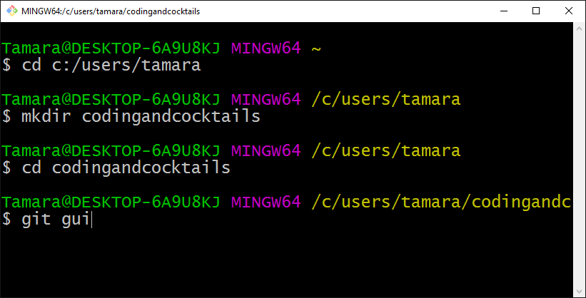

Version Control Basics Using Git
Slides available at: http://kansascitywomenintechnology.Git Hub.io/GitBasics
Last Month
In February we learned how to navigate our computer using the Command Line:
- changing directories using the CD command
- creating new folders using MKDIR
- building basic text documents using ECHO
We are going to build on last month's skills tonight!
What we'll cover
- What is Version Control?
- How Does Version Control Help Development Teams?
- Distinguish Between Git, Git Hub, and GitBash
- Build your first repository (a.k.a. 'repo')
- Practice Collaborating using Git, Git Hub, and Git Bash
- Stretch Goal: Start your personal web page, hosted on Git Hub
But First ...
Inspiring Female Developers
- Katrina Owen@kytrinyx
Katrina Owen
Exercism.io

What is Version Control?
A practice or method of recording changes made to a project that distinguishes between distinct updates and allows users to review, modify or rollback to prior versions of code.
B.G. - Before Git
Once upon a time. . .

Image Credit: Smashing Magazine
A.L. After Linus
The Rise of Git

Image Credit: Smashing Magazine
Git vs. Git Hub
Git is the version control concept and system.
Git Hub is one of several tools developers may use to manage a project using Git.
Exploring the Interfaces
Exploring the Interfaces

Git Hub

Getting Started on Git Hub
- Intialize your first repository
- Clone your new repository to your desktop
Git Work Flow
- Stage / Track your changes with git add
- Commit your changes using git commit -m 'my message'
- Push the changes to your Git Hub repository using git push origin master
Git Cheat Sheet by Tobias Günther
Git Hub's Official Git Cheat Sheet
Git Work Flow

Image Credit: https://Git Hub.com/gaui/git
Questions?
?